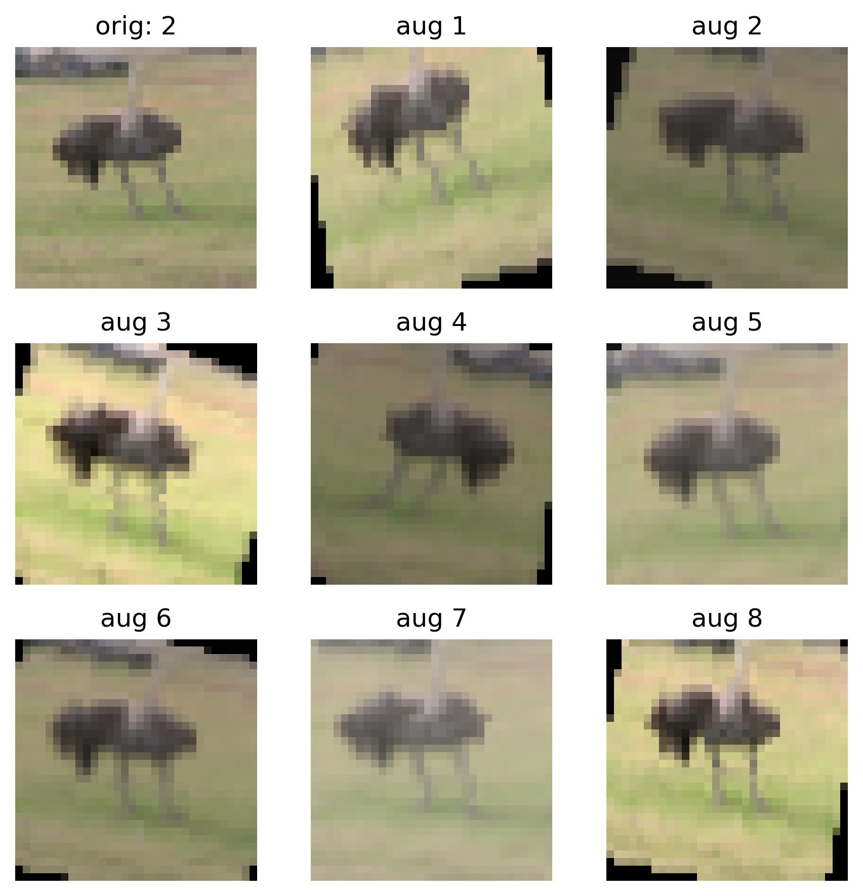

imports
import numpy as np
import matplotlib.pyplot as plt
from PIL import Image
import torch
from torchvision import transformsThomas Manke
April 9, 2026
As a most basic step we should convert an image to a tensor
NOTICE: different shapes for torch and numpy!
img.shape (torch tensor): torch.Size([3, 1024, 1024])
img.shape (numpy arrary): (1024, 1024, 3)We can also compose more complex transformations:
# code not executed - just for illustration
# image sizes and channels
IMG_H, IMG_W, IMG_C = 32, 32, 3
# normalizations are part of model definition!
MEAN = [0.485, 0.456, 0.406]
STD = [0.229, 0.224, 0.225]
transform = transforms.Compose([
# adjust H,W,C if necessary
transforms.Resize((IMG_H, IMG_W)),
transforms.Grayscale(num_output_channels=IMG_C),
transforms.ToTensor(), # image -> tensor
transforms.Normalize(mean=MEAN, std=STD), # image norm
])Transformations that do not change the label.
# define augmentation transformation
augment = transforms.Compose([
transforms.RandomRotation(degrees=20),
transforms.RandomHorizontalFlip(p=0.5),
transforms.ColorJitter(brightness=0.3, contrast=0.3),
transforms.RandomResizedCrop(size=512, scale=(0.8, 1.0)),
])
def imshow(img, title):
# (C,H,W) -> (H,W,C) for visual with plt
npimg = img.permute(1,2,0).numpy()
plt.imshow(npimg)
plt.title(title)
plt.axis("off") 
ROOT directoryFor illustration: single image in single subfolder
read dataset from images
len(ds) = 1, class_names=['cat']img: torch.Size([3, 512, 512]), label: cat… and similarly for larger pre-defined datasets (e.g. CIFAR-10 train data)
from torchvision import datasets
# CIFAR10 ./data structure is different from ImageFolder
train_ds = datasets.CIFAR10(
root='./data', train=True, download=True,
transform=transform
)
print(f'CIFAR-10 train dataset from ./data')
print(f'len(ds) = {len(train_ds)}, class_names={train_ds.classes}')
# dataset access
img, label = train_ds[42]
print(f'img: {img.shape}, label: {train_ds.classes[label]}')CIFAR-10 train dataset from ./data
len(ds) = 50000, class_names=['airplane', 'automobile', 'bird', 'cat', 'deer', 'dog', 'frog', 'horse', 'ship', 'truck']
img: torch.Size([3, 512, 512]), label: birdUsually we access datasets with DataLoaders.
from torch.utils.data import DataLoader, RandomSampler
NS=50_000 # number of samples to define epoch
BATCH_SIZE=64 # batch size for processing
print(f'orginal data size: {len(ds)}')
# sampling with replacement since we may have: len(ds) < NS
sampler = RandomSampler(ds, replacement=True, num_samples=NS)
train_loader = DataLoader(
ds,
batch_size=BATCH_SIZE,
sampler=sampler, # not shufffle=True
)
X,y = next(iter(train_loader))
print(f'batch sizes (with augmentation)')
print(f'images: {X.shape}, labels: {y.shape}')orginal data size: 1
batch sizes (with augmentation)
images: torch.Size([64, 3, 512, 512]), labels: torch.Size([64])---
title: "Data Augmentation"
jupyter: pytorch
draft: false
categories:
- transform
- augmentation
- datasets
- data loader
description: How to add synthetic data
---
```{python}
#| label: imports
#| code-fold: true
#| code-summary: imports
import numpy as np
import matplotlib.pyplot as plt
from PIL import Image
import torch
from torchvision import transforms
```
## Load Image Data
```{python}
#| label: load_image
img_path = "images/cat/confused_cat.jpg"
pil_img = Image.open(img_path).convert("RGB")
```
## Transformations
As a most basic step we should convert an image to a tensor
```{python}
#| label: transform_image
# basic conversion: PIL -> tensor [C,H,W] in [0.0,1.0]
transform = transforms.ToTensor()
img = transform(pil_img)
print('NOTICE: different shapes for torch and numpy!')
print(f'img.shape (torch tensor): {img.shape}')
print(f'img.shape (numpy arrary): {np.array(pil_img).shape}')
```
We can also *compose* more complex transformations:
- image size adjustments (if necessary)
- number of channels match (RGB or gray scale?)
- same normalization as done for model training
```{python}
#| label: transforms_compose
#| eval: false
#| echo: true
# code not executed - just for illustration
# image sizes and channels
IMG_H, IMG_W, IMG_C = 32, 32, 3
# normalizations are part of model definition!
MEAN = [0.485, 0.456, 0.406]
STD = [0.229, 0.224, 0.225]
transform = transforms.Compose([
# adjust H,W,C if necessary
transforms.Resize((IMG_H, IMG_W)),
transforms.Grayscale(num_output_channels=IMG_C),
transforms.ToTensor(), # image -> tensor
transforms.Normalize(mean=MEAN, std=STD), # image norm
])
```
## Data Augmentation
Transformations that do not change the label.
```{python}
#| label: augment_transform
# define augmentation transformation
augment = transforms.Compose([
transforms.RandomRotation(degrees=20),
transforms.RandomHorizontalFlip(p=0.5),
transforms.ColorJitter(brightness=0.3, contrast=0.3),
transforms.RandomResizedCrop(size=512, scale=(0.8, 1.0)),
])
def imshow(img, title):
# (C,H,W) -> (H,W,C) for visual with plt
npimg = img.permute(1,2,0).numpy()
plt.imshow(npimg)
plt.title(title)
plt.axis("off")
```
## Examples
```{python}
#| label: examples
# plot original image
plt.figure(figsize=(6, 6))
plt.subplot(3, 3, 1)
imshow(img, f"Confused Cat")
# plot random augmentations
torch.manual_seed(42)
for i in range(2, 10):
aug_img = augment(img).clamp(0.0, 1.0)
plt.subplot(3, 3, i)
imshow(aug_img, f"aug {i-1}")
plt.tight_layout()
plt.show()
```
::: {.callout-important}
### Data Augmentation
- include operations that will **not change** class label
- dataset specific: e.g. rotations, axis flipping, color adjustments, cropping ...??
- encodes understanding of symmetries in the problem
- should only be done for training data
:::
## Augmentation with Datasets
::: {.callout-note}
### Working with larger datasets
- attach transformation function to the dataset
- transformation will be called upon data **access** (not upon load)
:::
### Define transformation
```{python}
#| label: transform
# Modular definition: transformation + augmentation
transform = transforms.Compose([
transforms.ToTensor(),
augment,
])
```
### Dataset from directory
::: {.callout-note}
- images are located in `ROOT` directory
- organized by classes in subdirectories: cat/, dog/, ...
:::
For illustration: single image in single subfolder
```{python}
#| label: dataset_load_direct
from torchvision import datasets
ROOT="images" # root folder with images
# attach transform() function to dataset
ds = datasets.ImageFolder(root=ROOT, transform=transform)
print(f'read dataset from {ROOT}')
print(f'len(ds) = {len(ds)}, class_names={ds.classes}')
```
### Dataset access
```{python}
#| label: dataset_access
# accessing elements from ds with __getitem__()
# calls img=transform(img) before returning (img, label)
# at access time - not during reading
img, label = ds[0]
print(f'img: {img.shape}, label: {ds.classes[label]}')
```
... and similarly for larger pre-defined datasets (e.g. CIFAR-10 train data)
```{python}
#| label: image_from_cifar
from torchvision import datasets
# CIFAR10 ./data structure is different from ImageFolder
train_ds = datasets.CIFAR10(
root='./data', train=True, download=True,
transform=transform
)
print(f'CIFAR-10 train dataset from ./data')
print(f'len(ds) = {len(train_ds)}, class_names={train_ds.classes}')
# dataset access
img, label = train_ds[42]
print(f'img: {img.shape}, label: {train_ds.classes[label]}')
```
## Augmentation with Data Loader
Usually we access datasets with DataLoaders.
::: {.callout-note}
- size of a dataset (and an epoch) becomes arbitrary
- replace each original image with many generated images
:::
```{python}
#| label: dataset_from_image_folder
from torch.utils.data import DataLoader, RandomSampler
NS=50_000 # number of samples to define epoch
BATCH_SIZE=64 # batch size for processing
print(f'orginal data size: {len(ds)}')
# sampling with replacement since we may have: len(ds) < NS
sampler = RandomSampler(ds, replacement=True, num_samples=NS)
train_loader = DataLoader(
ds,
batch_size=BATCH_SIZE,
sampler=sampler, # not shufffle=True
)
X,y = next(iter(train_loader))
print(f'batch sizes (with augmentation)')
print(f'images: {X.shape}, labels: {y.shape}')
```